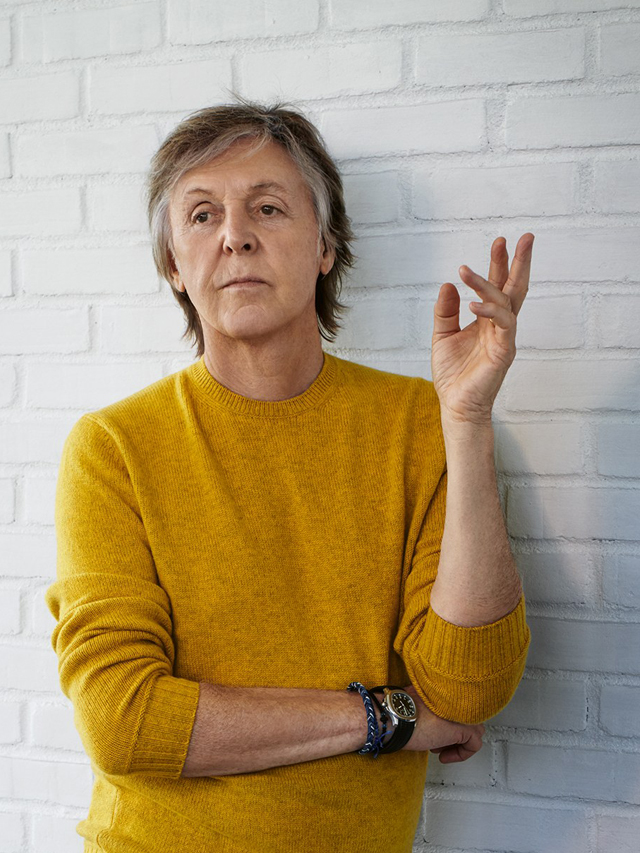

He’s as famous and accomplished as a man can be. He could just stay home, relax, and count his money. But Paul McCartney is as driven as ever. Which is why he’s still making music and why he has loads of great stories you’ve never heard—about the sex life of the Beatles, how he talked John Lennon out of drilling holes in his head (really), and what actually happened when he worked with Kanye.